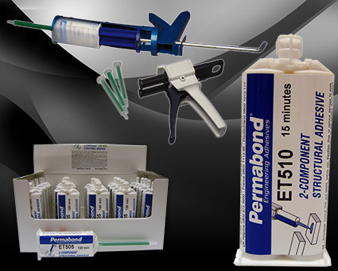

雙液環氧樹酯（AB 膠）
Permabond 雙液環氧樹酯又稱 AB膠，是雙組份丙烯酸 AB膠粘劑，無需加熱，可常溫固化（若搭配 Mixer及專業膠槍能夠提升使用效率）能夠取代金屬焊接，大幅度降低生產裝配成本。產品環保無毒、高粘接強度、韌性好、耐油、耐水等眾多優點;固化物具有良好的絕緣、抗壓、收縮率低等電氣及物理特性。廣泛應用於各種高檔陶瓷、玻璃、金屬數碼科技等產品的製造與修復。

| 產品 | 簡介 | 顏色 | 黏度(cp) | 剪切強度（psi） | 剝離強度（piw） | 初固時間（min） | TDS |
|---|---|---|---|---|---|---|---|
| ET500 | 固化快，無黃化 | 無色 | 13,000~24,000 | 1700~2600 | 1~4 | 5~8 | 下載 |
| ET501 | 無色透明，無黃化 | 透明 | 13,000~24,000 | 1700~2600 | 1~4 | 15~20 | 下載 |
| ET5011 | 黏接木材、金屬、陶瓷、塑料、復合材料、珠寶 | 透明 | 40000~80,000 | 900~1700 | 1~4 | 25~30 | 下載 |
| ET502 | 快速定位，高黏度 | 透明 | 45,000~90,000 | 1200~1700 | 1~4 | 5~10 | 下載 |
| ET505 | 增韌型，黏接，灌封 | 琥珀色 | 12,000~27,000 | 2600~3000 | 13~18 | 180~300 | 下載 |
| ET510 | 增韌型，抗剝離及衝擊 | 琥珀色 | 22,000~39,000 | 1200~1700 | 16~20 | 20~40 | 下載 |
| ET515 | 增韌型，黏接，灌封 | 透明 | 12,000~22,000 | 2600~3000 | 16~20 | 20~30 | 下載 |
| ET514 | 增韌型，高強度 | 灰色 | 50,000~80,000 | 1200~1700 | 13~18 | 60~120 | 下載 |
| ET5143 | 高強度，使用 FDA 認可原材料 | 灰色 | 75,000~140,000 | 1200~1700 | 7~11 | 180~300 | 下載 |
| ET5145 | 高強度，使用 FDA 認可原材料 | 乳白色 | 75,000~140,000 | 2600~2900 | 7~11 | 180~300 | 下載 |
| ET5147 | 2:1，高強度，耐高溫，使用 FDA 認可原材料 | 乳白色 | 65,000~115,000 | 2600~3200 | 7~11 | 180~300 | 下載 |
| ET530 | 2:1，滴年度，快速固化，適用灌封 | 透明 | 400~800 | 2800~3000 | N/A | 480~720 | 下載 |
| ET535 | 高強度，增韌型 | 黑色 | 57,000~114,000 | 2600~2900 | N/A | 120~180 | 下載 |
| ET536 | 高強度，增韌型 | 灰色 | 75,000~150,000 | 2200~3500 | 13~18 | 90~120 | 下載 |
| ET5365 | 2:1，通過 WRAS 飲用水認證，高剪切強度，良好的衝擊強度 | 灰色 | 85,000~125,000 | 1450~2000 | N/A | 120~240 | 下載 |
| ET538 | 黏接基材廣泛 | 灰色 | 35,000~70,000 | 2600~2900 | 13~18 | 180~300 | 下載 |
| ET540 | 2:1，耐高溫 | 琥珀色 | 83,000~117,000 | 2000~2600 | N/A | 150~180 | 下載 |
| ET5401 | 2:1，增韌型不滴膠，黏接多種基材，耐高溫 | 灰色 | 55,000~110,000 | 1450~2200 | 55~66 | 60~90 | 下載 |
| ET5411 | 2:1，耐高溫 250°C | 黑灰 | 25,000~37,500 | 3000 | N/A | N/A | 下載 |
| ET5428 | 2:1，高剪切強度和剝離強度，抗衝擊 | 黑/白 | 90,000~225,000 | 2600~3200 | 33~55 | 30~45 | 下載 |
| ET5429 | 2:1，高剪切強度和剝離強度，抗衝擊 | 碳黑 | 95,000~165,000 | 2600~3200 | 33~51 | 360~600 | 下載 |
| ET5441 | 2:1，1.6 高導熱，優異的耐化學性，高黏接強度 | 灰色 | 17,000~28,000 | 2900 | N/A | N/A | 下載 |
| ET051730 | 2:1，高剪切強度和剝離強度，抗衝擊，對 ABS、PC、PVC 強度可達基材破壞 | 灰色 | 8,500~14,500 | 2600~3600 | 68~125 | 180~240 | 下載 |
| ET051120 | 100:15，低黏度，自流平，高強度，低收縮率，適用於灌封 | 透明 | 2,000~3,500 | 1450~1885 | 80~102 | 450~480 | 下載 |
| ET051120.1 | 100:6.5，低黏度，自流平，高強度，高 TG，低收縮率，適用於灌封 | 黑色 | 2,000~3,000 | 2465~2610 | 57~64 | 280~210 | 下載 |
| ET05531 | 2:1，低黏度，滲透性好，適用於灌風，耐黃化 | 透明 | 400~800 | 1450~1700 | N/A | 480~720 | 下載 |
| ET05532 | 高剪切和剝離強度，良好的衝擊強度 | 透明 | 5,500~8,500 | 2600~3600 | N/A | 30~40 | 下載 |
| ET05306 | 高觸變，高黏接強度，適用於多種基材的黏接 | 淡黃 | 膏狀 | 2200~2900 | N/A | 10~15 | 下載 |